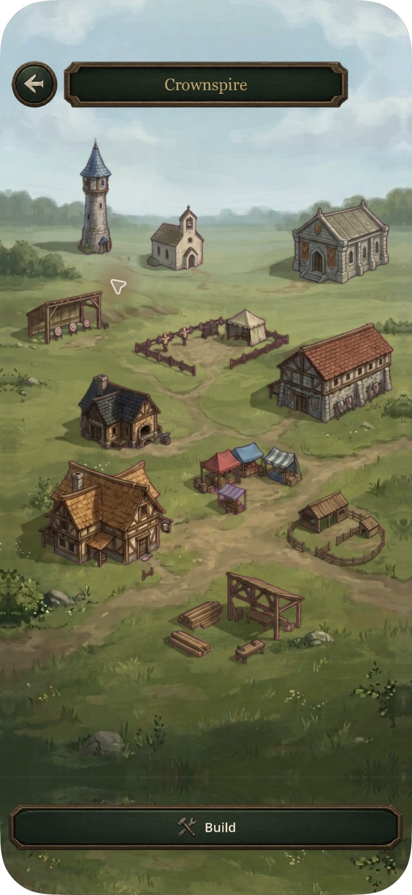
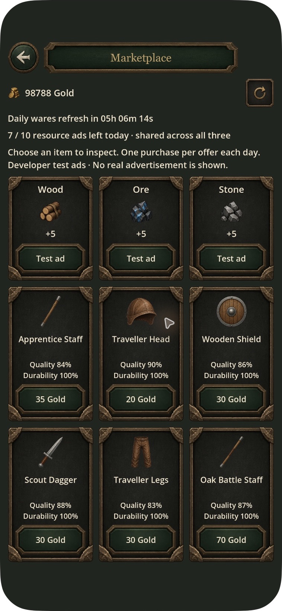
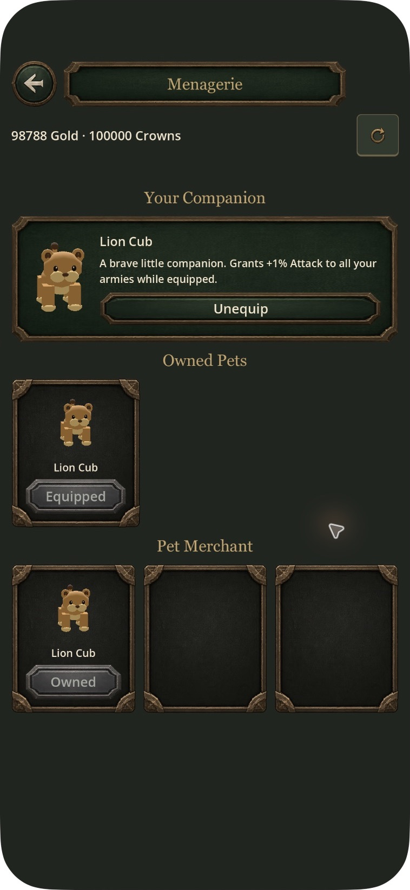
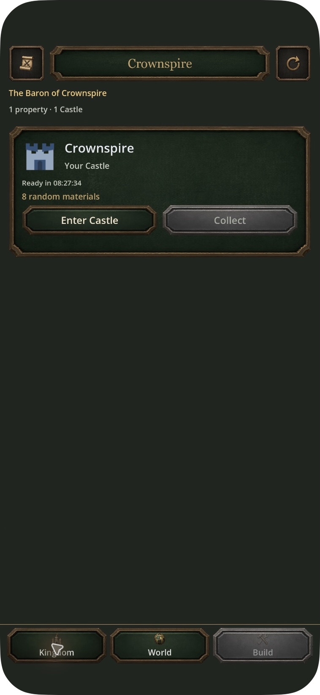

Choose land thoughtfully.
Placement checks the full footprint, existing properties and mapped terrain. Water and unavailable geography cannot become buildable land simply because a marker looks clear.
Kingdom Builder / World & Kingdom
The landscape gives your adventures a setting. Your kingdom gives those adventures a lasting purpose.
The overworld
The game follows your phone's location through a finite 3D neighborhood. Roads, water, parks and woodland provide the geographic setting for your character, resources, properties and encounters.
It is more than a conventional map with a marker on it. Your surroundings become a game world, while permanent properties keep their identity as you travel away and return.
Resource caches and enemy-army encounters populate eligible areas. Wilderness dungeon entrances offer another kind of detour: a first-person adventure for your hero party, rather than your field troops.
World populations refresh over time. Completing an encounter is remembered for your player, so revisiting is not simply a way to claim the same reward repeatedly.

Your holdings
Every kingdom begins with a castle. Additional holdings use materials and occupy persistent land in the geographic world. Their different footprints make expansion a choice, not just another identical marker.
| Holding | Footprint | Place in your kingdom |
|---|---|---|
| Castle | 4 × 4 cells | Your headquarters, with building management, recruitment and kingdom systems. |
| Town | 3 × 3 cells | A larger secondary settlement, contributing materials and Gold through production. |
| Village | 2 × 2 cells | A smaller holding with its own identity and production. |
| Outpost | 1 cell | A compact foothold within your expanding set of properties. |
Placement checks the full footprint, existing properties and mapped terrain. Water and unavailable geography cannot become buildable land simply because a marker looks clear.
Castle and settlement names give your holdings an identity beyond their map position. Your displayed title also reflects how many properties you currently own.
Castle life
Your castle now opens into a painted landscape, with eleven building locations connected by paths. Construction and completed buildings have their own artwork; tap a finished building to enter its part of kingdom life.
Materials, construction time and building prerequisites give development a sequence. The headquarters is not just a menu: it is the place where your next army, hero party or equipment choice begins.
The Construction Yard completes the current eleven-building catalog.

The Marketplace
Six equipment offers refresh together each day. All accounts see the same selection, with an item's Gold price, quality and durability shown before a purchase. Your purchases are your own: another player's visit does not empty your shop.
Each offer can be bought once per account during that rotation. Purchased items enter the same inventory used by Hero Details, with their advertised condition retained rather than rerolled.
Weapons, shields and armor use the same item art wherever you encounter them. Inspect a piece before committing Gold, then equip a compatible hero outside combat.
The installed developer build shows simulated resource-ad controls. Live rewarded advertisements are not enabled. Their appearance in this capture is not an announcement of finished advertising or monetization.

The Menagerie
The Menagerie introduces companions separate from both your army roster and hero party. The first is a Lion Cub, available for 500 in-game Gold. Own one of each pet and choose a single equipped companion, or travel without one.
An equipped cub follows your ruler through the geographic world and adds 1% Attack to all your army types. The bonus works alongside Blacksmith improvements; it does not strengthen dungeon heroes.
Your selection remains equipped when you leave the castle. The current cub uses a low-poly development model; the two empty merchant spaces are room for future content, not additional pets already available.

A kingdom that remembers
The kingdom list brings your properties together with their identity, status and production. A holding does not disappear from your kingdom simply because it is no longer in view on the map.
The current screen shows when production will be ready and offers collection when a payout is available. Each property's production has its own timing, connecting the places you establish to an ongoing rhythm of gathering and reinvestment.
This capture shows a young kingdom with its first castle. Towns, villages and outposts extend that same collection of owned places as the kingdom grows.

Materials & momentum
Wood, Stone and Ore support construction, recruitment and upgrades. Gold serves other kingdom costs and rewards. The choices you make at home connect to what you gather outside.
Properties accumulate production that can be collected through the kingdom list. The current system holds one ready payout per property, rather than an unlimited backlog.
Rations represents troop-support capacity. Recruitment reserves that capacity while troops are being prepared; it is not simply another material deducted from the same resource pile.
Your property list brings holdings together even when they are not currently visible on the nearby map. Castle management and collection do not require repeatedly finding each marker.
The current placement system does not require physically standing on every property footprint. Outdoor resource and encounter interactions have their own proximity rules. These systems, costs and coverage remain subject to development.